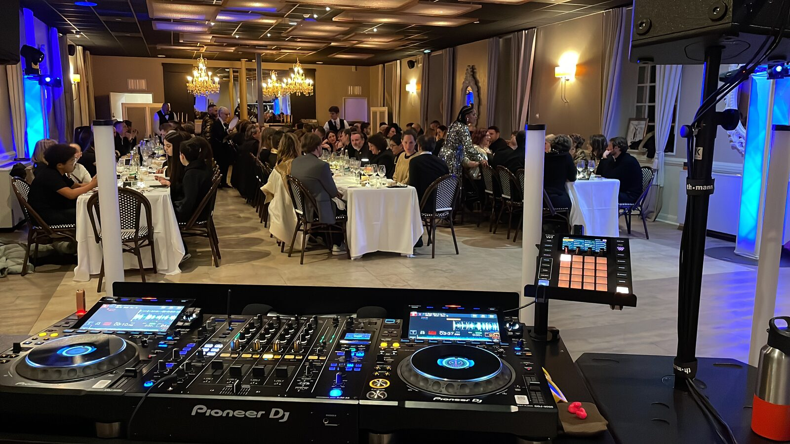
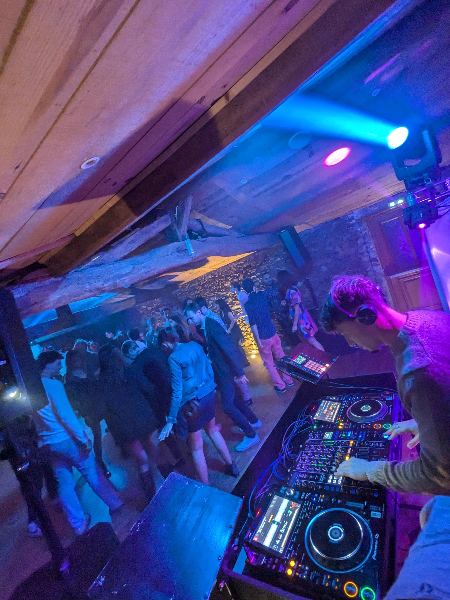

Corporate & séminaires
Qu'il s'agisse d'un séminaire, d'une soirée étudiante, d'une animation sur salon ou du lancement d'un produit, chaque événement professionnel doit être une signature mémorable. Chez KoKa Group, nous façonnons des expériences immersives, où son et lumière servent votre message avec précision.
Des expériences immersives
De la mise en scène soignée à l'interaction fluide avec votre public, nous vous aidons à créer un impact fort, à la hauteur de votre ambition.

Séminaires
Nous assurons la sonorisation et l'éclairage de vos séminaires pour une expérience fluide et professionnelle. Discours, remises de prix ou soirée dansante en clôture, nous adaptons notre installation à votre programme pour garantir une ambiance maîtrisée et un rendu impeccable.
Soirées étudiantes
Pour une soirée qui marque les esprits, nous apportons un son puissant, des jeux de lumières dynamiques et une sélection musicale qui maintient l'énergie toute la nuit. Du clubbing aux soirées à thème, nous créons une atmosphère à la hauteur de vos attentes.
Animation sur salon
Attirez et captez l'attention avec une mise en scène soignée. Nous gérons la sonorisation des interventions et annonces, tout en installant un éclairage optimisé pour mettre en valeur votre stand et rendre vos animations plus percutantes.
Présentation produit
Un lancement doit marquer les esprits. Nous créons une ambiance sonore et visuelle impactante pour capter l'attention et mettre en valeur votre produit, avec des éclairages précis et une diffusion sonore adaptée à votre public.
After party
Prolongez l'événement avec une ambiance taillée pour l'after ! Que ce soit pour un festival, un salon ou un rassemblement professionnel, nous installons une scène, un DJ set et des lumières immersives pour clôturer la soirée en beauté.
Un superbe DJ battle avec jeux de lumières et breakdance. Un souvenir merveilleux pour toute l'équipe. Je recommande vivement.Mac44 — Événement corporate, 2026
Un partenaire à la hauteur de votre ambition
Notre méthodologie repose sur un repérage technique du lieu en amont, une sonorisation professionnelle adaptée à la taille de la salle, et une gestion complète des annonces et interventions micro. Nous assurons un éclairage scénique modulable, de l'ambiance lounge au show dynamique, en coordination étroite avec votre équipe événementielle. Du matériel de secours est systématiquement prévu pour garantir une prestation sans faille.



Tout savoir sur nos prestations corporate
Quels types d'événements corporate animez-vous ?
Nous intervenons sur une grande variété d'événements professionnels : séminaires d'entreprise, galas, soirées étudiantes, animations sur salon, lancements de produits, team buildings et after parties. Chaque prestation est adaptée à l'identité de votre marque et aux objectifs de votre événement.
Pouvez-vous gérer la sonorisation d'un séminaire complet ?
Absolument. Nous prenons en charge l'intégralité de la sonorisation de votre séminaire, des discours d'ouverture aux tables rondes, en passant par les remises de prix et la soirée dansante de clôture. Nous adaptons notre matériel et notre configuration à chaque moment du programme pour garantir un rendu sonore impeccable.
Proposez-vous des solutions pour les lancements de produits ?
Oui, le lancement de produit est l'une de nos spécialités. Nous créons une ambiance sonore et visuelle impactante, pensée pour capter l'attention de votre audience et mettre en valeur votre produit. Jeux de lumières, identité sonore sur-mesure et mise en scène soignée font partie de notre approche.
Quel matériel technique utilisez-vous ?
Nous travaillons avec du matériel professionnel de dernière génération : systèmes de sonorisation adaptés à la taille de chaque salle, éclairages scéniques modulables, platines Pioneer et contrôleurs DJ haut de gamme. Du matériel de secours est systématiquement prévu pour assurer une prestation sans interruption.
Intervenez-vous partout en France ?
Oui, nous intervenons sur l'ensemble du territoire français. Basés à Nantes et Poitiers, nous nous déplaçons partout en France pour accompagner vos événements corporate. Nous effectuons systématiquement un repérage technique du lieu en amont afin d'adapter notre installation aux spécificités de chaque espace.
Quel est le processus de réservation ?
C'est simple : contactez-nous via notre formulaire ou par WhatsApp pour nous présenter votre projet. Nous échangeons ensuite sur vos besoins, le lieu, le programme et l'ambiance souhaitée. Nous vous adressons un devis détaillé et personnalisé, puis nous coordonnons l'ensemble de la prestation technique avec votre équipe événementielle.
Découvrez nos autres prestations
Un projet en tête ?
Chaque événement corporate est unique. Contactez-nous pour discuter de vos envies et recevoir un devis personnalisé. Notre équipe se tient à votre disposition pour transformer votre vision en une expérience mémorable.
Nous contacter